Live
sessions
Improvised modular sets, intimate listening events and shared jams — no two performances are the same.
MODULAR FRIENDSWe gather to play live, create unrepeatable improvised music, and explore new connections through sound.
SCROLL TO EXPLORE ↓Modular Friends is a Tbilisi-based creative collective and recurring event series, bringing together modular synthesists, experimental musicians, sound artists and visual practitioners.
Through live improvisation, deep listening, shared knowledge and visual collaborations, Modular Friends cultivates an open, supportive approach to experiencing and making music.
Beyond Tbilisi, artists connected to Modular Friends — including AGAVA and Spilled Ambiences — have performed in Berlin, Germany. Further collaborations are being explored in Denmark, Germany and Glasgow, Scotland.
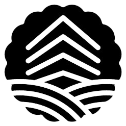
LIVE / IMPROVISATION / VISUALS / COMMUNITYModular Friends is a collective, a meeting point and an evolving creative environment. The focus is on curiosity, a welcoming listening culture, and making space for people to learn and create together.
Improvised modular sets, intimate listening events and shared jams — no two performances are the same.
Occasional workshops, lectures and open conversations around modular synthesis, sound and related creative practices.
Small stages and immersive environments designed for festivals, gatherings and new listening contexts.
A changing network of musicians, visual artists and collaborators who exchange ideas, experience and tools.
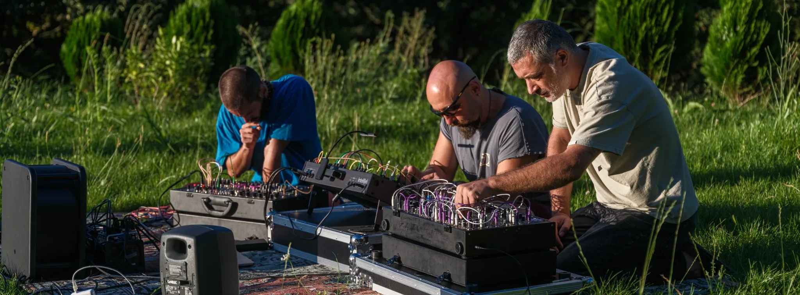
A healthy listening culture begins with attention, respect and participation — an invitation to discover music without pressure and to create new connections through sound.
Upcoming events, live sets, workshops and listening sessions will appear here as soon as they are announced.
No upcoming date has been published here yet. Follow the official Instagram page for the latest announcements and booking details.
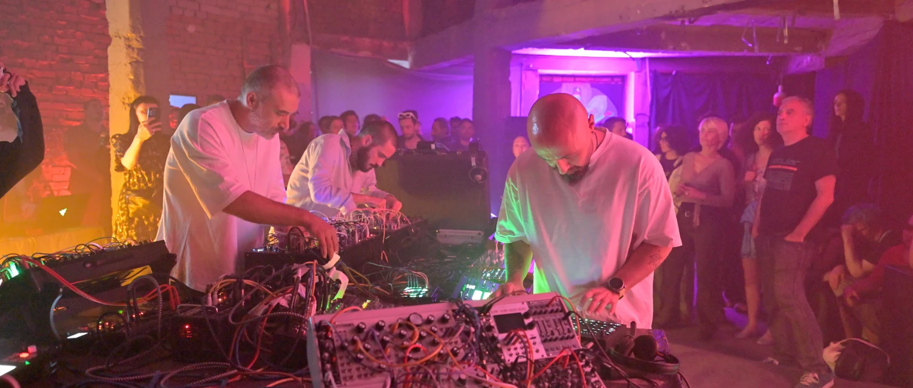
PLANT LOVERS · TBILISI
DEDAENA PARK · TBILISI
PLANT LOVERS · TBILISI
SYNTHESIA LAB · TBILISI
| EDITION | DATE | SPACE | REF |
|---|---|---|---|
| MF-001 | ANNOUNCED 15 JAN 2026 | Plant Lovers Tbilisi | SOURCE |
| MF-002 | 2026-01-30 | Plant Lovers Tbilisi | SOURCE |
| MF-003 | DATE TO VERIFY | VENUE TO VERIFY | SOURCE |
| MF-004 | 2026-02-13 | Plant Lovers Tbilisi | SOURCE |
| MF-005 | 2026-02-20 | Plant Lovers Tbilisi | SOURCE |
| MF-006 | 2026-02-27 | Plant Lovers Tbilisi | SOURCE |
| MF-007 | 2026-03-14 | UZU House | SOURCE |
| MF-008 | DATE TO VERIFY | 1905 Community | SOURCE |
| MF-009 | 2026-04-13 | ABSEA Studio / ABSEA Radio | SOURCE |
| MF-010 | 2026-04-26 | Bubble Bar / Afisha terrace | SOURCE |
The archive is being reconstructed from published announcements and artist posts. A date marked as an announcement is not the confirmed event date. Participation does not automatically imply permanent collective membership. Additional collaborative performances are documented in the research database.
At Stockton Invites 2026 in Satibe, artists and collaborators around Modular Friends helped shape Plant Lovers Area — an intimate, nature-focused ambient space featuring a vibrational platform installation and live sound experiences.
The area brought together ambient performances, an experimental voice-based session and Plant Lovers’ Plant Music Project. The vibrational platform created another way to encounter sound beyond conventional listening. The festival environment reflects the collective’s work across music, sound art and shared experiences.
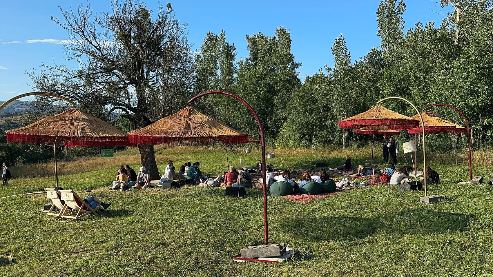
An evolving community of artists and collaborators. Search by artist name or sound, then open a profile to read more.
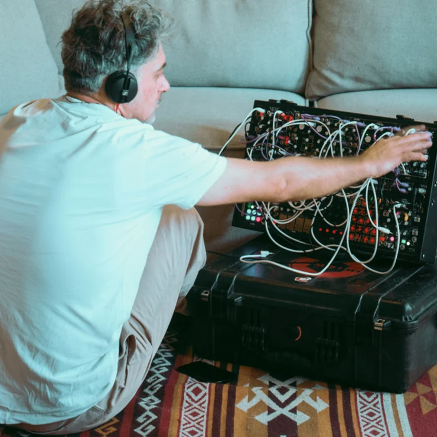
An experimental modular synthesizer project dedicated to live performance. AGAVA brings together resonance, rough electronic textures, ambient soundscapes, noise and improvisation. Every set develops in real time, encouraging deep listening and a different experience each time.
VISIT ARTIST INSTAGRAM ↗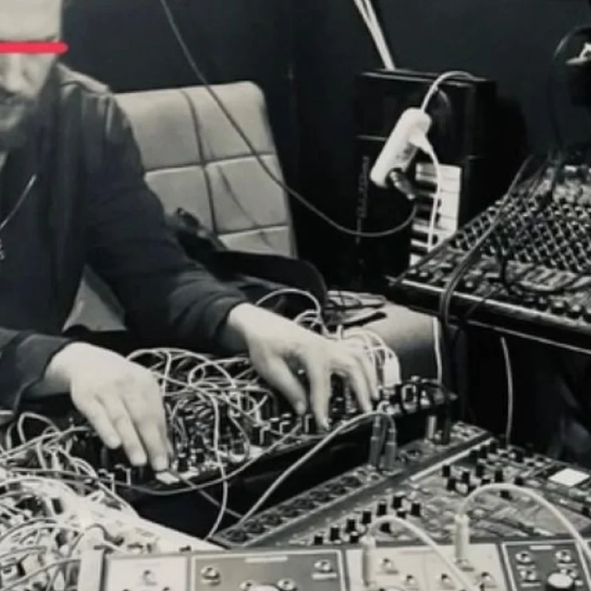
Active in Tbilisi’s underground electronic scene, Eddie Strxm began exploring modular synthesis in 2018. His performances combine steady grooves with evolving systems, feedback patching and self-generating structures. Modular techno performed live, with room for unpredictable energy.
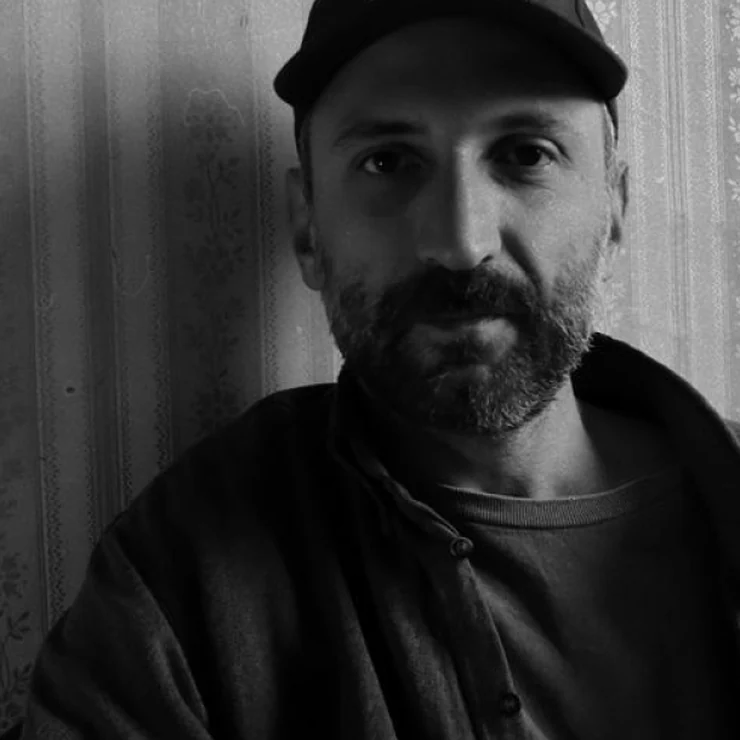
A filmmaker whose musical practice approaches sound as a journey of discovery. His experimental work combines the raw character of live instruments with samples and field recordings.
VISIT ARTIST INSTAGRAM ↗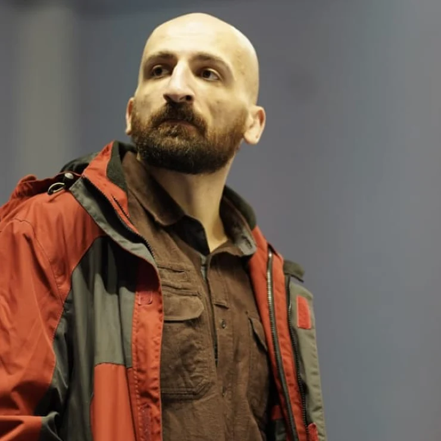
A Tbilisi-based guitarist and electronic music producer creating live, improvisational techno performances with modular synthesizer systems and drum machines.
VISIT ARTIST INSTAGRAM ↗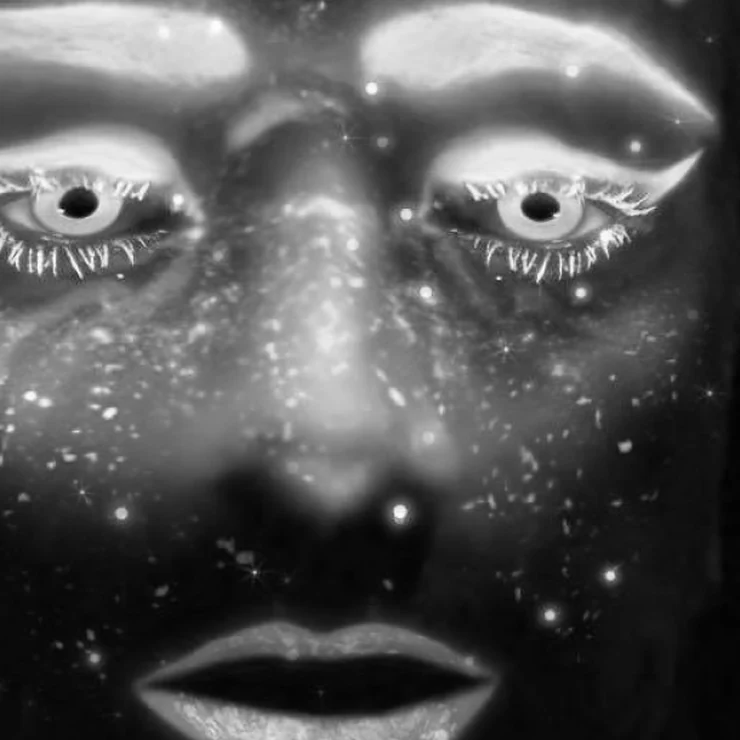
The experimental solo identity of Levan Javakhishvili, associated with TOYSOP Records. Combining guitar and electronic devices, Marching Dog moves between psychedelic excursions, expansive atmospheres and more intimate sonic environments.
VISIT ARTIST INSTAGRAM ↗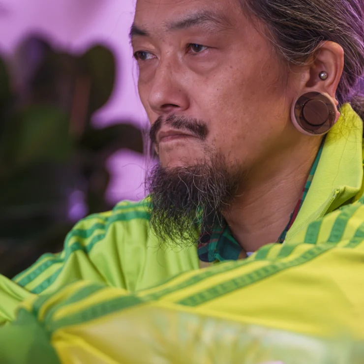
An electronic musician working with modular synthesizers across ambient, noise and experimental electronics. His sound explores unstable voltages, delicate textures and unexpected combinations, inviting listeners toward unfamiliar sonic environments.
VISIT ARTIST INSTAGRAM ↗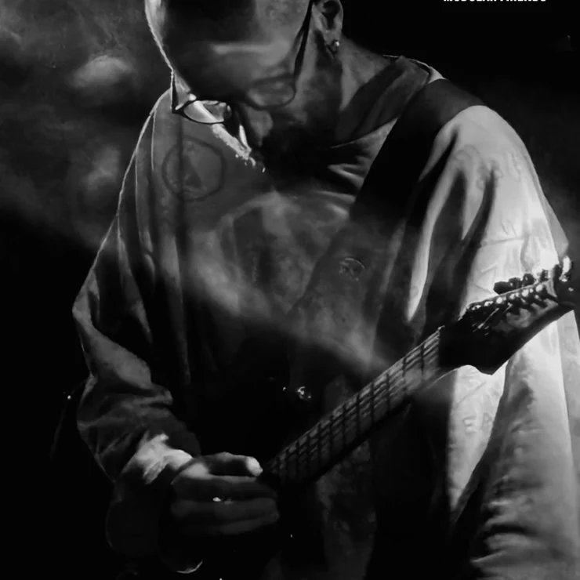
Guri Goliadze is a cinematographer and experimental musician. Under the name Neroli Kid, he combines analog lo-fi elements with cinematic ambient soundscapes.
VISIT ARTIST INSTAGRAM ↗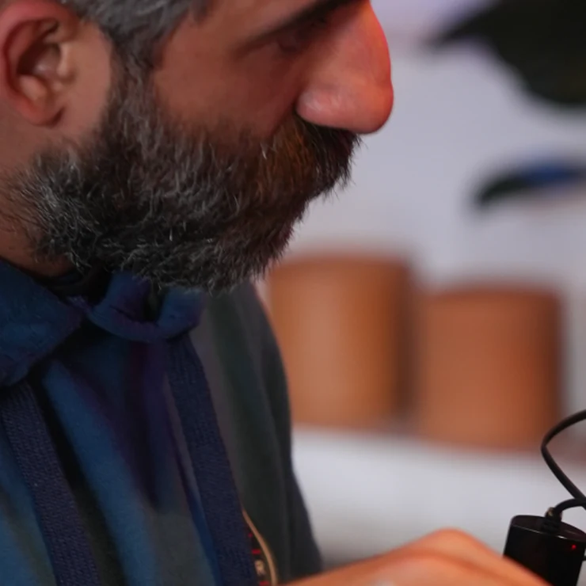
A multidisciplinary artist whose work extends from acoustic music into ceramics and experimental electronics. As a modular performer, Shota explores Moog synthesizers and collaborative, spontaneous music-making.
VISIT ARTIST INSTAGRAM ↗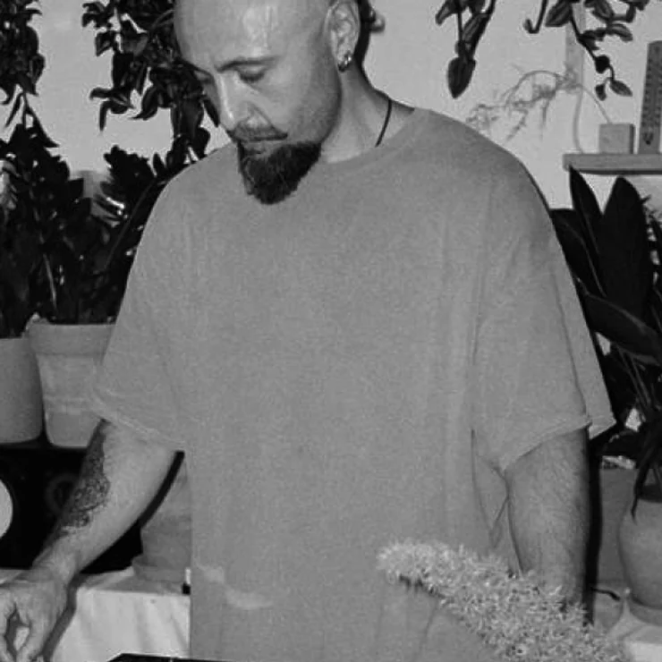
Shalva (Shako) Dzebisashvili is a Tbilisi-based musician and sound artist. His practice spans DJing, sound engineering, live ambient performance and music for installations, theatre and film. Field recordings and synthesis connect organic sounds with electronic textures.
VISIT ARTIST INSTAGRAM ↗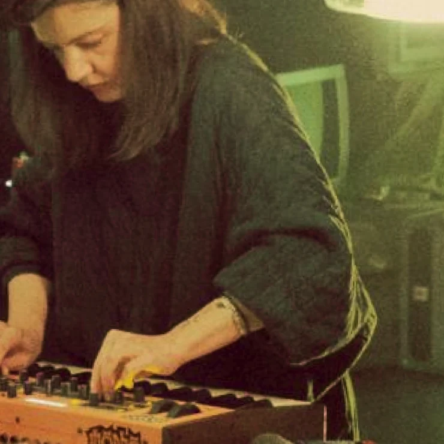
A Georgian electronic artist shaping sound through voice, loops and synthesis. Her work moves between tradition and transformation, building personal, intuitive listening experiences through emotion, structure and presence.
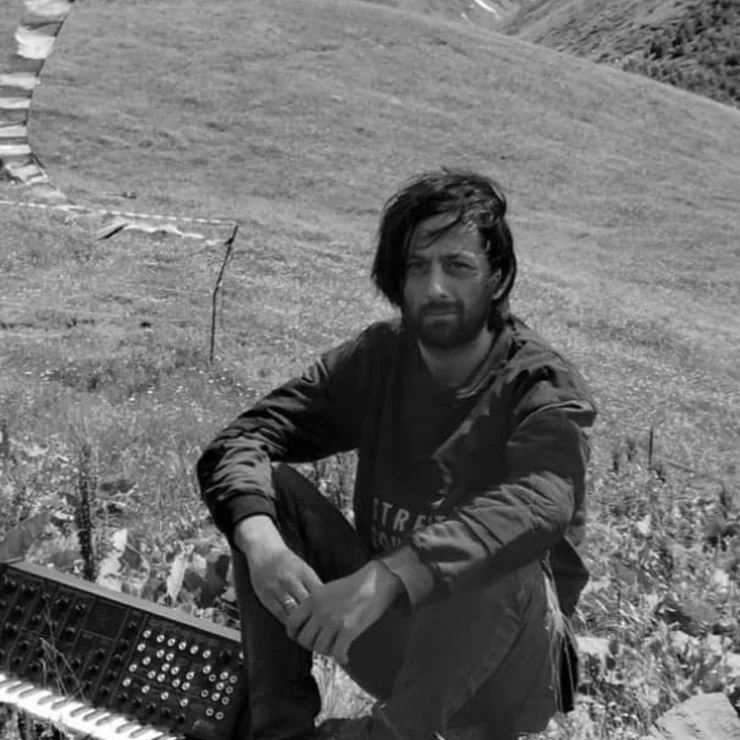
An experimental project by Georgian artist Sandro Chinchaladze. TeTe Noise brings together cassette loops, analog electronics and field recordings in improvised sound collages that explore memory, decay and transformation.
VISIT ARTIST INSTAGRAM ↗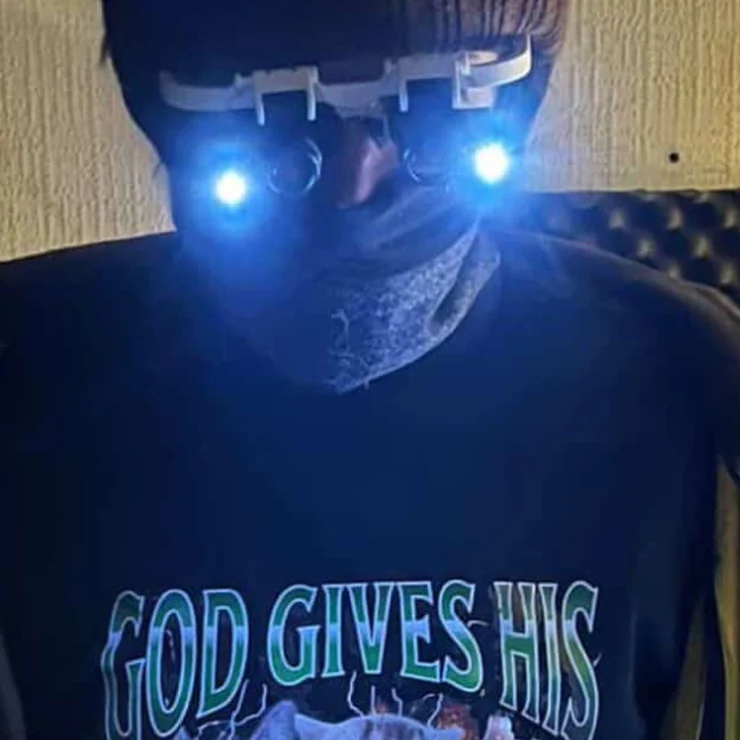
Giorgi Tetsoshvili is a Tbilisi-based drummer, electronic percussionist and improviser. His performances explore lo-fi rhythmic fragments, noise and interaction, producing shifting, immersive sound environments.
VISIT ARTIST INSTAGRAM ↗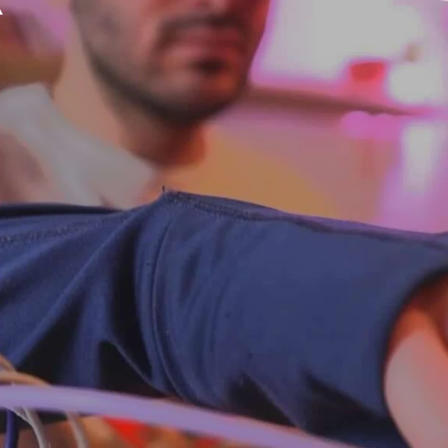
A Tbilisi-based electronic musician, producer and sound engineer working with groove, texture and experimental sound design. He also founded SPECTRON, a platform for live electronic and audiovisual performance.
VISIT ARTIST INSTAGRAM ↗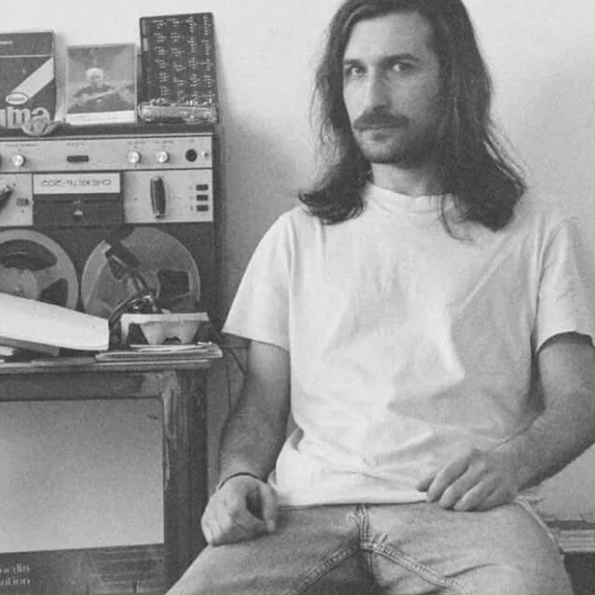
A music producer from Tbilisi and co-founder of the club Thili Orgia and Laboratory of Sonic Arts, according to the supplied artist profile. His work moves across experimental genres and different artistic media.
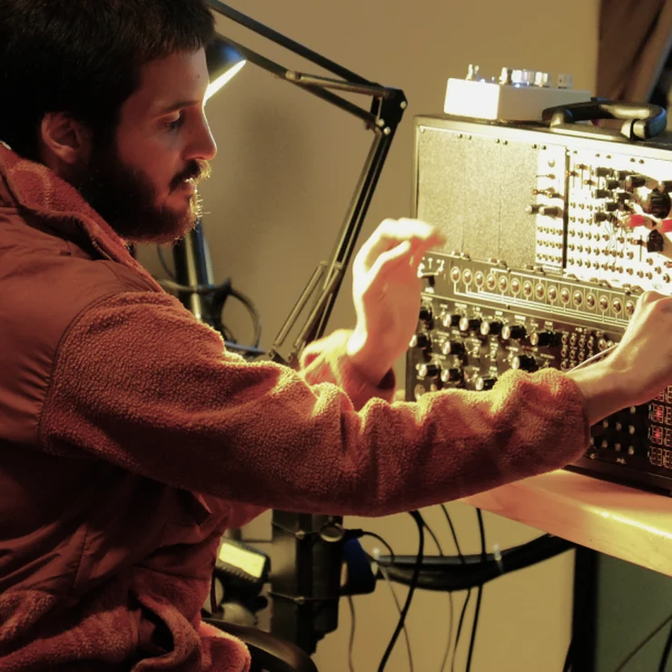
Nika Gogiashvili is a Georgian musician from Batumi. Originally active as a guitarist and session musician, he later moved toward electronic sound. As Wayward Atom, he explores modular synthesis through complex signal paths, rhythm, texture and live improvisation.
VISIT ARTIST INSTAGRAM ↗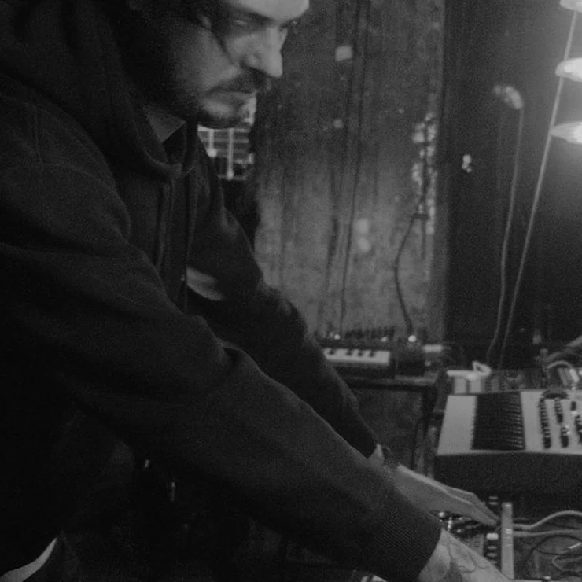
An electronic artist and live performer working with IDM, dark breakbeat and hardware synthesis. His sets draw on Moog instruments, melancholic analog textures, aggressive rhythms and improvisational sound design.
Showing 12 of 16 artists
No matching artists yet. Try another name or sound.
Artist biographies are adapted from the supplied Modular Friends / Synthesia Lab information cards. They are editorial descriptions, not a list of permanent members. All portrait photo credits should be confirmed before public launch.
Live visuals, generative images, projections and audiovisual experimentation form an essential part of the gatherings. Visual collaborators change with each edition, creating new relationships between listening and seeing.
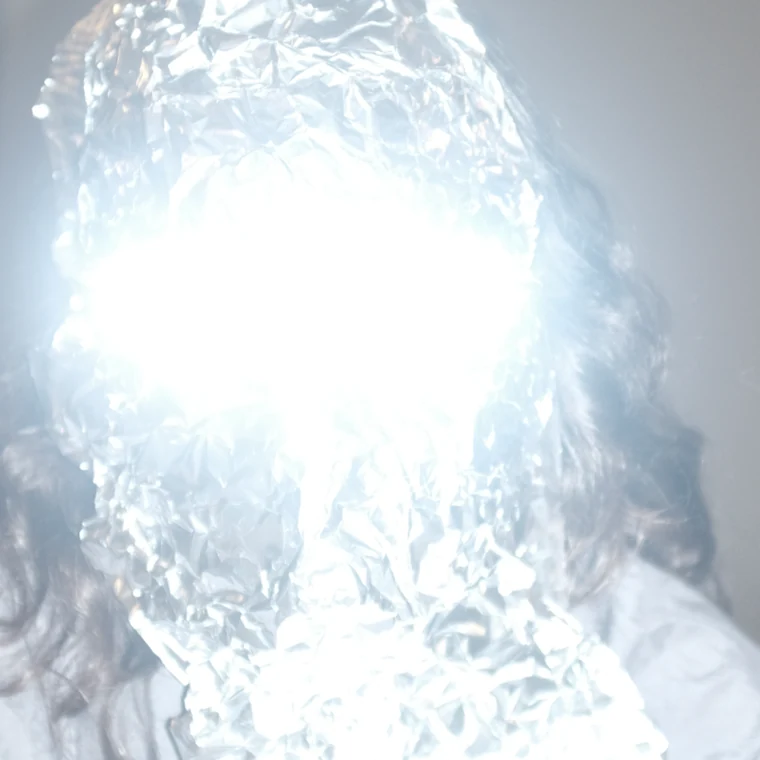
“Nenealism”. My practice blends generative digital visuals with real-life photography and video, using different tools to manipulate the image. Through these, I explore perception and psychology between inner and outer realities.
VISIT @nenealism ↗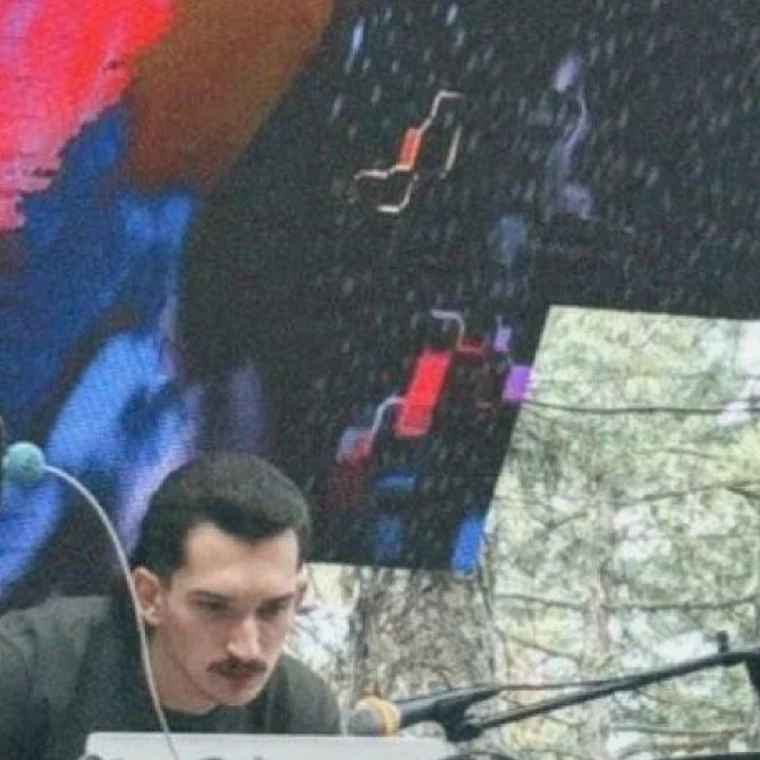
Progenol is an audiovisual artist pairing multimedia visuals with experimental music. His visuals blur the line between memories, imagination and digital fantasy.
VISIT @progenol ↗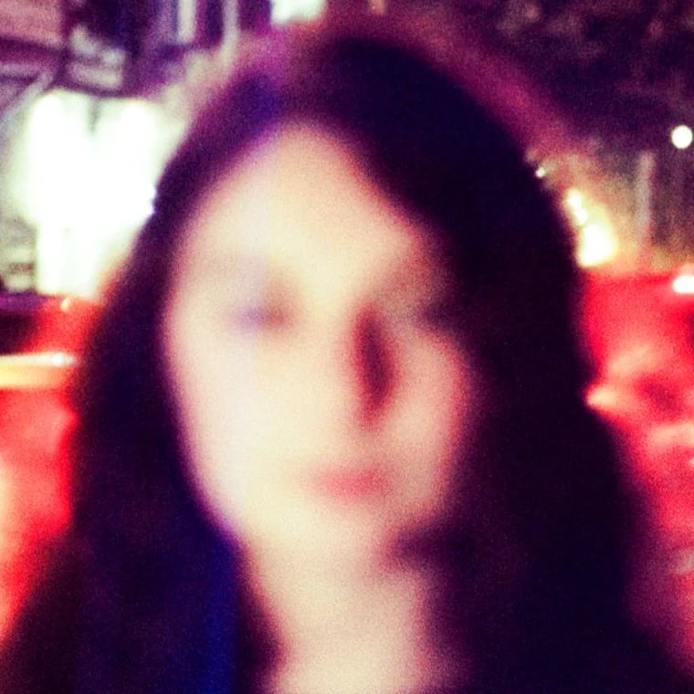
Mimi Melashvili adapts to spaces and sounds using all the known or unknown tools, allowing her to transform ideas into mind-mapping visuals.
VISIT @mimimelashvilii ↗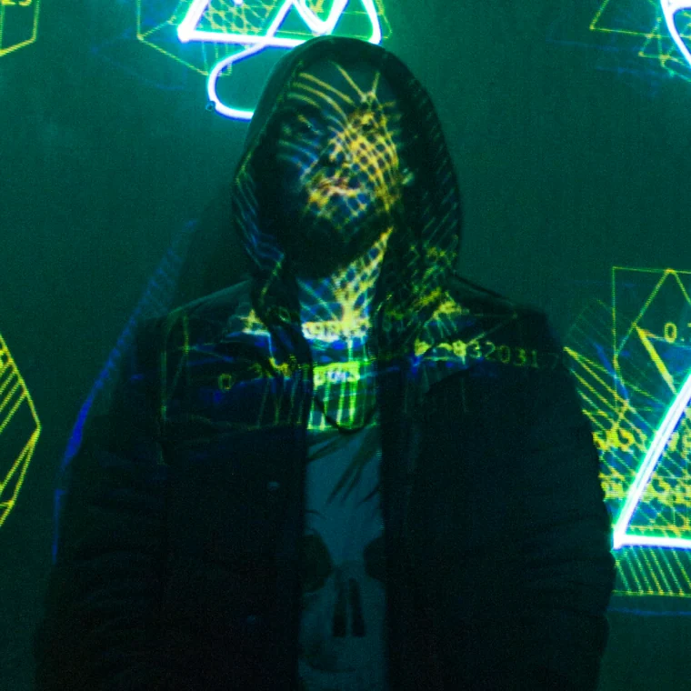
Stepping into the heart of the Synthesia Lab experience, this performance merges the ethereal mediation of SkyWalker visuals with real-time generative systems to create a responsive “cyberdelic” environment where light and sound evolve in total synchronicity.
VISIT @skywalker._.visuals ↗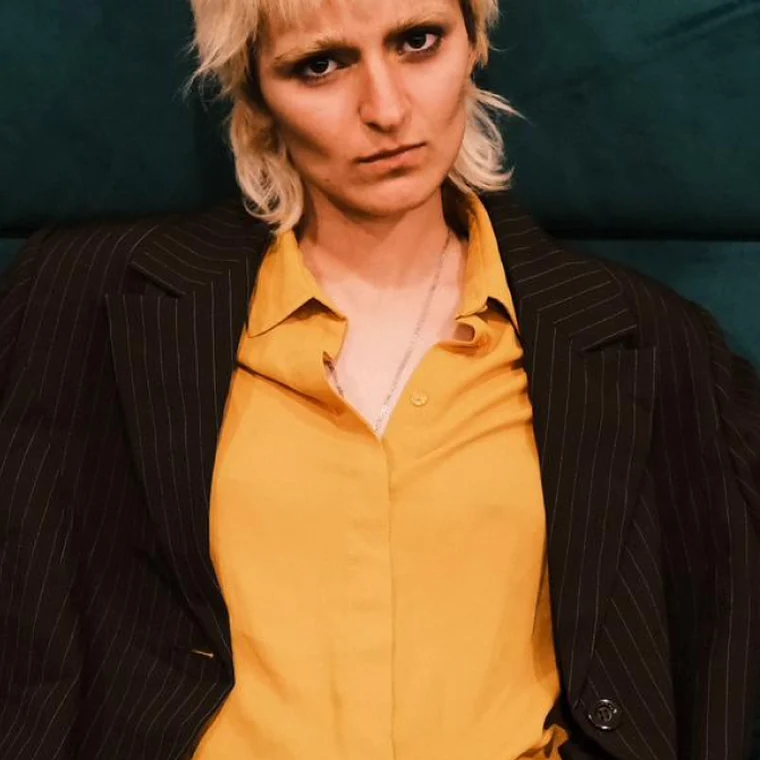
Sophie Gvelukashvili is an experimental filmmaker and multimedia artist working in video art, installation, documentary and experimental film. Her work explores overlooked communities and stories, as well as identity, loss and memory. Through archival footage, video art and immersive space, she aims to express emotions that are more felt than said.
VISIT @sophie_gvelukashvili ↗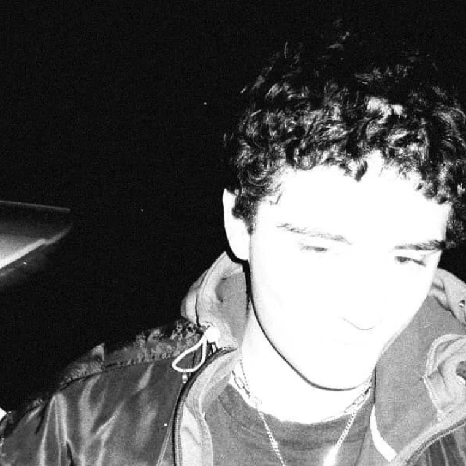
Yoyo is a visual artist based in Georgia whose work moves between psychedelic visions and a minimalist aesthetic.
VISIT @y_oyoyoyoy_o ↗Modular Friends lives through the people in the room. A selection of real moments from performances, collective listening and audiovisual collaborations. Photographer and edition credits are being compiled for the full archive.
Selected from photographs supplied for the Modular Friends archive. Individual photographers, exact event associations and republication permissions should be confirmed before public release.
Published articles and listings documenting Modular Friends and the wider local creative scene.
Project profile — PDF ↗ · Additional press and archive material
Bring a new sound, a new image or an idea. Modular Friends is about making things together.
@modular_friends ↗Merchandise and ticket requests currently take place via Instagram. Online checkout is not enabled.